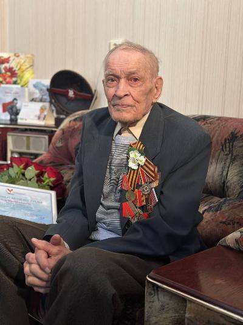

За фронтовую службу Пётр Фадеевич был награждён медалями «За Победу над Германией» и «За доблестный труд в Великой Отечественной войне». В Югорске он являлся почётным участником памятных мероприятий ко Дню Победы, а губернатор Югры и жители города неизменно отдавали дань глубокого уважения последнему фронтовику муниципалитета.
Суворов Пётр Фадеевич
Участник Великой Отечественной войны, Почётный гражданин Югорска (1927–2025)
Пётр Фадеевич до последних дней оставался единственным фронтовиком, проживавшим в Югорске. Не занимая руководящих постов, он стал для горожан живой нитью, связывающей современный город с великим подвигом поколения победителей.

Жизненный путь героя
1927 год
Родился в Горьковской области в многодетной семье.
1944 год
Потеряв на войне четырёх старших братьев, в 17 лет ушёл на фронт добровольцем. Служил авиамехаником, готовя к боевым вылетам легендарные штурмовики Ил-2.
1950 — 2013 гг.
После демобилизации посвятил себя мирному созидательному труду, удостоен звания «Ветеран труда». В 2013 году переехал в Югорск.
Март 2025 г.
В знак глубокого уважения и благодарности всему поколению победителей удостоен звания «Почётный гражданин города Югорска».